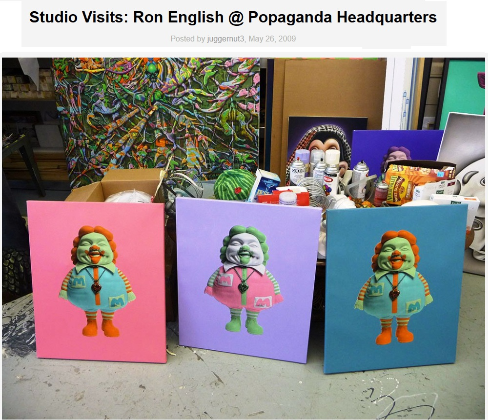
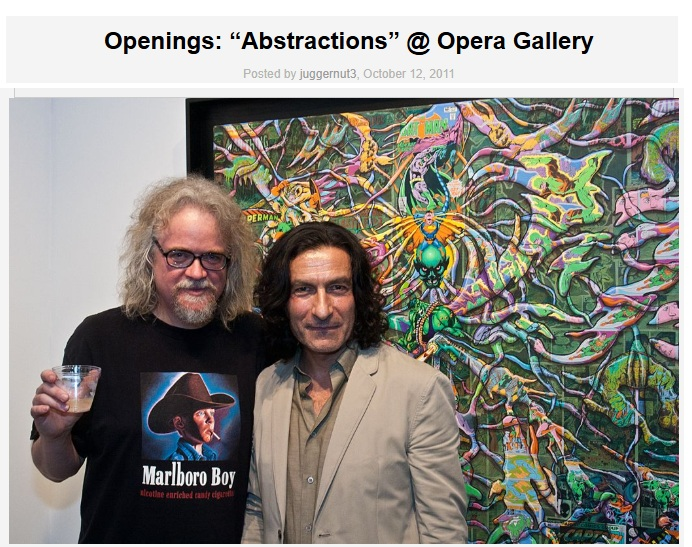

Exhibitions
Lazarus Rising, Elms Lesters Painting Rooms, London, United Kingdom, May 8–June 6, 2009.
Abstractions, Opera Gallery, New York, New York, US, September 23–October 16, 2011.
Literature
Ron English, Lazarus Rising (London: Elms Lesters Painting Rooms, 2009), p. 7.
Ron English, Status Factory: The Art of Ron English (San Francisco: Last Gasp of San Francisco, 2014), p. 25. ISBN 978-0867197891.
Ron English, Fauxlosophy: The Art of Ron English (San Francisco: Last Gasp, 2016), p. 154. ISBN 978-0867196566.
Ron English, Original Grin: The Art of Ron English (Paris: Cernunnos, 2019), p. 338. ISBN 978-2374950938.
Notes
This work appears in the background of studio photographs published in Arrested Motion’s “Studio Visits: Ron English @ Popaganda Headquarters,” documenting works at Ron English’s studio ahead of Lazarus Rising.
The work is also documented in Vandalog’s coverage of Abstractions at Opera Gallery and in Arrested Motion’s opening and exhibition photographs for the same exhibition.
Ancillary Documentation


